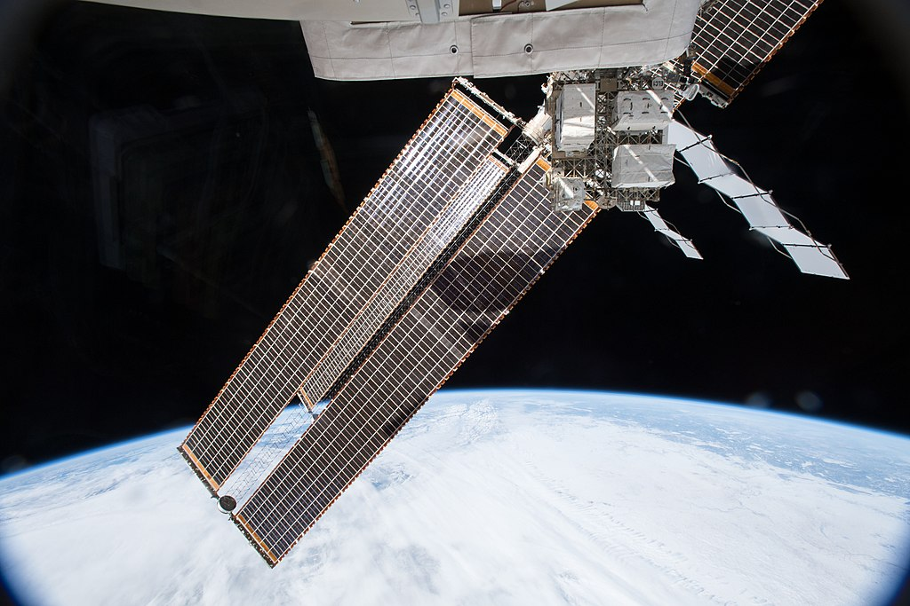

Satellite
KITE YOU CAN KNOW ABOUT SPACE TECH !
A satellite or artificial satellite is an object intentionally placed into orbit in outer space.
Satellites have a variety of uses, including communication relay, weather forecasting, navigation (GPS),
broadcasting, scientific research, and Earth observation. Additional military uses are reconnaissance, early warning,
signals intelligence and, potentially, weapon delivery. Other satellites include the final rocket stages that placed
satellites in orbit and formerly useful satellites that are now defunct.
Except for passive satellites, most satellites have an electricity generation system for equipment
on board, such as solar panels or radioisotope thermoelectric generators (RTGs). Most satellites also have a method
of communication to ground stations, called transponders. Many satellites use a standardized bus to save cost and
work, the most popular of which is small CubeSats. Similar satellites can work together as a group, forming
constellations. Because of the high launch cost to space, satellites are designed to be as lightweight and robust
as possible. Most communication satellites are radio relay stations in orbit and carry dozens of transponders,
each with a bandwidth of tens of megahertz.
Satellites are placed from the surface to orbit by launch vehicles, high enough to avoid orbital decay by the atmosphere.
Satellites can then change or maintain the orbit by propulsion, usually by chemical or ion thrusters. In 2018, about 90%
of satellites orbiting Earth are in low Earth orbit or geostationary orbit; geostationary means the satellites stay still
at the sky. Some imaging satellites chose a Sun-synchronous orbit because they can scan the entire globe with similar
lighting. As the number of satellites and space debris around Earth increases, the threat of collision has become more
severe. A small number of satellites orbit other bodies (such as the Moon, Mars, and the Sun) or many bodies at once
(two for a halo orbit, three for a Lissajous orbit).
Earth observation satellites gather information for reconnaissance, mapping, monitoring the weather, ocean, forest, etc.
Space telescopes take advantage of outer space's near perfect vacuum to observe objects with the entire electromagnetic
spectrum. Because satellites can see a large portion of the Earth at once, communications satellites can relay
information to remote places. The signal delay from satellites and their orbit's predictability are used in satellite
navigation systems, such as GPS. Space probes are satellites designed for robotic space exploration outside of Earth,
and space stations are in essence crewed satellites.
The first artificial satellite to be launched into the Earth's orbit was the Soviet Union's Sputnik 1, on 4 October 1957.

The first published mathematical study of the possibility of an artificial satellite
was Newton's cannonball, a thought experiment by Isaac Newton to explain the motion of natural satellites,
in his Philosophiæ Naturalis Principia Mathematica (1687). The first fictional depiction of a satellite being
launched into orbit was a short story by Edward Everett Hale, "The Brick Moon" (1869). The idea surfaced again
in Jules Verne's The Begum's Fortune (1879).
In 1903, Konstantin Tsiolkovsky (1857–1935) published Exploring Space Using Jet Propulsion Devices,
which is the first academic treatise on the use of rocketry to launch spacecraft. He calculated the orbital speed
required for a minimal orbit, and that a multi-stage rocket fueled by liquid propellants could achieve this.
Herman Potočnik explored the idea of using orbiting spacecraft for detailed peaceful and military observation of
the ground in his 1928 book, The Problem of Space Travel. He described how the special conditions of space could be
useful for scientific experiments. The book described geostationary satellites (first put forward by Konstantin
Tsiolkovsky) and discussed communication between them and the ground using radio, but fell short of the idea of
using satellites for mass broadcasting and as telecommunications relays.
In a 1945 Wireless World article, the English science fiction writer Arthur C. Clarke described in detail the possible
use of communications satellites for mass communications. He suggested that three geostationary satellites would provide
coverage over the entire planet.
In May 1946, the United States Air Force's Project RAND released the Preliminary Design of an Experimental World-Circling
Spaceship, which stated "A satellite vehicle with appropriate instrumentation can be expected to be one of the most potent
scientific tools of the Twentieth Century." The United States had been considering launching orbital satellites since 1945
under the Bureau of Aeronautics of the United States Navy. Project RAND eventually released the report, but considered the
satellite to be a tool for science, politics, and propaganda, rather than a potential military weapon.
In 1946, American theoretical astrophysicist Lyman Spitzer proposed an orbiting space telescope.
In February 1954, Project RAND released "Scientific Uses for a Satellite Vehicle", by R. R. Carhart. This expanded on potential
scientific uses for satellite vehicles and was followed in June 1955 with "The Scientific Use of an Artificial Satellite",
by H. K. Kallmann and W. W. Kellogg.
Categories
Tags
LATEST POSTS
HOW MANY GALAXIES ARE IN THE KNOWN UNIVERSE?
There are close to 170 billion, or recent research estimates, 2 billion billion galaxies in the observable universe. The numbers are between 1,000 and 100,000 parsecs in diameter, and the two neighboring galaxies are often several million parsecs (or megaparsecs) apart.
CLOUDY WEATHER ON TITAN IS MADE OF METHANE
Fusce vel mauris vel nulla pellentesque egestas. In vestibulum risus nec nisi...
IS THE EARTH THE CENTER OF THE CELESTIAL SYSTEM?
The position of the Earth is only an insignificant part of the universe, despite recent theories that topple the foundations of modern cosmology, according to a University of British Columbia research team. The book On the Revolutions of the Heavenly Spheres by the Polish astronomer Nicolaus Copernicus, in 1543, changed the concept from Earth as the center of the universe to Earth as just a planet orbiting the sun. Since then, generations of astronomers have expanded on this idea and formulated the Copenic Theory, which holds that our Earth in the universe is just a perfectly normal planet. Although the Copenic Theory has become the cornerstone of modern cosmology, finding evidence that the Earth is a non-specific part of the Universe has proved quite difficult. In 1998, studies of cosmic explosions called "type Ia supernovae" showed that the expansion of the universe was accelerating, caused by the repulsion of a mysterious "dark energy" source. However, some scientists have put forward a different theory, stating that the Earth is located near the center of a giant "bubble" that is mostly devoid of matter, and goes against the Copenic Theory. Thereby, gravity would create the illusion of rapid expansion, similar to the effect of dark energy on supernova observations.
OTHER SATELLITE